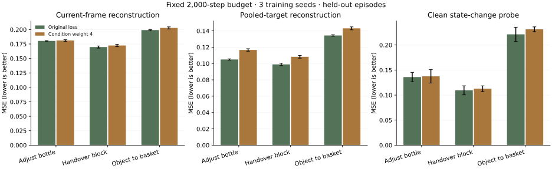
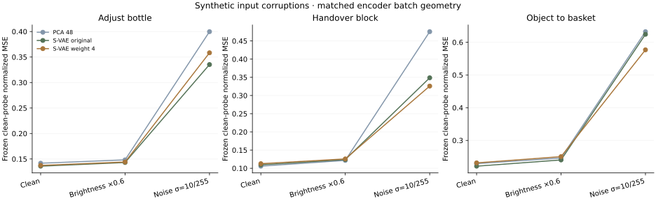

先补评测。
加权改动暂不推荐。
在三个任务、三个训练种子的固定预算对照中，没有得到足以推荐“提高当前帧损失权重”的证据。今晚更可靠的交付，是一个保持模型和训练不变的独立评测入口，以及完整的对照结果。
今晚识别出的可补全部分
| 候选贡献 | 证据与决定 |
|---|---|
| 独立 held-out 评测 | 固定上游版本的 S-VAE 训练入口没有独立验证流程。新增脚本可直接评测现有检查点，使用训练时的归一化统计。推荐作为首个贡献。 |
| 当前帧 / 未来帧分开汇报 | 两类输入的分布与作用不同。汇总误差不能说明收益来自哪一类；同时报告目标能量归一化结果，避免误读自然方差差异。 |
| 当前帧损失权重设为 4 | 三个任务、全部种子保留。当前证据不足以推荐；不放入贡献补丁，不改变默认训练。 |
| 扰动与控制相关诊断 | 干净训练的探针在合成噪声下更差。作为筛查工具保留；未验证闭环机器人成功率。 |
相同预算下，改动是否值得保留？
三个任务的平均点估计：加权后当前帧重建误差增加 0.4%–1.8%，未来帧误差增加 6.5%–11.1%，干净输入 probe 误差增加 1.1%–4.6%。部分区间跨过零，因此不将每一个差异都称为显著退化。
更值得保留的观察：原始 S-VAE 相对 PCA-48 的汇总重建误差低约 45%–50%，但干净 probe 的均值只在两个任务改善约 3%–4%，交接任务反而差约 3.5%。重建与控制相关读出的排序并不一致；是否稳定显著仍需更多独立轨迹。
每个任务 50 条模拟示范，35/5/10 条分别用于训练、验证、测试。每条采样 12 个短片。两种 S-VAE 使用相同初始化种子与 minibatch 序列，固定训练 2,000 步，评估最终检查点。
原始损失对三个 latent 时间位置取平均。候选权重将当前帧从总权重的 1/3 提高到 2/3；网络结构、潜变量维度、数据与推理均不变。

误差越低越好。误差条为三个训练种子的标准差，不是独立轨迹置信区间。
重建误差：包含 PCA-48 对照
| 任务 | 方法 | 当前帧 MSE | 未来帧 MSE | 汇总 MSE |
|---|---|---|---|---|
| 瓶子调整 | PCA-48 | 0.3458 | 0.2180 | 0.2606 |
| 瓶子调整 | S-VAE 原始损失 | 0.1803 ± 0.0005 | 0.1049 ± 0.0008 | 0.1301 ± 0.0006 |
| 瓶子调整 | S-VAE 当前帧权重 4 | 0.1811 ± 0.0013 | 0.1166 ± 0.0015 | 0.1381 ± 0.0014 |
| 双臂交接 | PCA-48 | 0.3169 | 0.2096 | 0.2454 |
| 双臂交接 | S-VAE 原始损失 | 0.1697 ± 0.0019 | 0.0989 ± 0.0015 | 0.1225 ± 0.0016 |
| 双臂交接 | S-VAE 当前帧权重 4 | 0.1724 ± 0.0021 | 0.1082 ± 0.0017 | 0.1296 ± 0.0018 |
| 物体入篮 | PCA-48 | 0.3489 | 0.2514 | 0.2839 |
| 物体入篮 | S-VAE 原始损失 | 0.1991 ± 0.0009 | 0.1343 ± 0.0009 | 0.1559 ± 0.0009 |
| 物体入篮 | S-VAE 当前帧权重 4 | 0.2028 ± 0.0018 | 0.1430 ± 0.0018 | 0.1630 ± 0.0018 |
权重 4 相对原始损失的配对差异
正数表示更差。先对三个训练种子平均，再以 held-out 轨迹为单位做 10,000 次配对 bootstrap。区间条件于这三个已训练种子；它没有把训练随机性或任务总体的不确定性全部包括进来。
| 任务 | 指标 | 相对变化 | MSE 差值 [95% 区间] |
|---|---|---|---|
| 瓶子调整 | 当前帧重建 | +0.4% | +0.00075 [-0.00002, +0.00153] |
| 瓶子调整 | 未来帧重建 | +11.1% | +0.01166 [+0.01104, +0.01234] |
| 瓶子调整 | 干净输入 probe | +1.1% | +0.00154 [-0.00142, +0.00448] |
| 双臂交接 | 当前帧重建 | +1.6% | +0.00271 [+0.00221, +0.00321] |
| 双臂交接 | 未来帧重建 | +9.4% | +0.00929 [+0.00907, +0.00948] |
| 双臂交接 | 干净输入 probe | +2.9% | +0.00318 [-0.00067, +0.00876] |
| 物体入篮 | 当前帧重建 | +1.8% | +0.00366 [+0.00295, +0.00437] |
| 物体入篮 | 未来帧重建 | +6.5% | +0.00871 [+0.00817, +0.00929] |
| 物体入篮 | 干净输入 probe | +4.6% | +0.01013 [+0.00091, +0.02163] |
当前帧误差更大，不等于模型忽略当前观测
未来特征经过时间平均，目标方差会降低。我们补充了“相对预测训练均值的误差”：误差平方和除以标准化目标能量。它不是围绕测试集均值拟合的 R²，也不直接衡量动作信息。
| 任务 | 原始 MSE 当前 / 未来 | 当前帧相对误差 | 未来帧相对误差 |
|---|---|---|---|
| 瓶子调整 | 1.72× | 0.1544 | 0.1137 |
| 双臂交接 | 1.72× | 0.1525 | 0.1052 |
| 物体入篮 | 1.48× | 0.1823 | 0.1421 |
冻结的探针能否承受输入变化？
探针仅使用当前视觉潜变量与当前机器人状态，在干净训练集拟合。预测目标是四个原始时间步后的末端位移与夹爪状态；它不是控制命令。验证集选择 ridge 正则化，测试集只用于评估。
扰动施加在拼接后的当前输入图像：亮度乘 0.6，或加入标准差为 10/255 的高斯噪声。状态输入与监督目标不变，探针不重新拟合。这里没有真实相机视角变化，也不是 LIBERO-Plus。

全部任务与方法的探针结果
| 任务 | 方法 | 干净输入 | 亮度 ×0.6 | 噪声 σ=10/255 |
|---|---|---|---|---|
| 瓶子调整 | PCA-48 | 0.1418 | 0.1483 | 0.3998 |
| 瓶子调整 | S-VAE 原始损失 | 0.1359 ± 0.0094 | 0.1432 ± 0.0128 | 0.3353 ± 0.0561 |
| 瓶子调整 | S-VAE 当前帧权重 4 | 0.1375 ± 0.0134 | 0.1441 ± 0.0163 | 0.3583 ± 0.0528 |
| 双臂交接 | PCA-48 | 0.1058 | 0.1217 | 0.4755 |
| 双臂交接 | S-VAE 原始损失 | 0.1095 ± 0.0090 | 0.1239 ± 0.0089 | 0.3487 ± 0.0671 |
| 双臂交接 | S-VAE 当前帧权重 4 | 0.1127 ± 0.0058 | 0.1257 ± 0.0058 | 0.3259 ± 0.0481 |
| 物体入篮 | PCA-48 | 0.2291 | 0.2462 | 0.6324 |
| 物体入篮 | S-VAE 原始损失 | 0.2213 ± 0.0142 | 0.2403 ± 0.0254 | 0.6243 ± 0.1153 |
| 物体入篮 | S-VAE 当前帧权重 4 | 0.2314 ± 0.0048 | 0.2505 ± 0.0082 | 0.5769 ± 0.0078 |
加权方案并非所有指标都更差：噪声下，交接与入篮任务的 probe 均值改善约 6.5% 和 7.6%，瓶子任务则差约 6.9%。这种跨任务、跨条件的取舍不足以支持更改默认权重。
这些结果用于诊断表征和固定读出器的敏感性，不能单独确定整个 WAM 策略的失败原因。对压缩方法的排序也不能只看重建误差。
哪些控制支撑这些结论？
- 统计与 PCA 只用训练轨迹拟合；所有窗口按 episode 分组划分，未随机拆分重叠短片。
- 每个任务的三种子、两种损失全部报告；固定最终检查点，没有按测试表现挑选种子或步数。
- 第一次扰动抽取使用单帧批量，与干净缓存的九帧批量产生数值差异。最终报告排除了那批扰动结果，按相同九帧批量重新编码。
- 全部 360 个测试短片都通过干净重编码检查：最大绝对差 0。两种损失与 PCA 共享完全相同的扰动输入。
- 输入为九个视频帧，覆盖 33 个原始时间步，得到一个当前 latent 加两个未来 latent。这与发布配置 num_frames=33、video_stride=4 的时间采样一致；本次仅选取每条轨迹 12 个完整窗口，并未复现官方穷举窗口及尾部掩码训练。
固定 2,000 步并不意味着各方法都已收敛。因此今晚的负结果是“在这个预算下不值得推荐”，不是证明任何权重或更长训练都无效。
上述训练时间不含下载、安装、特征抽取和 probe 评测。完整初次运行 14.9 分钟，匹配批量后的重新评测 1.5 分钟；不将它们混称为训练耗时。
可审阅的最小贡献
补丁包含四个文件，共增加 237 行：110 行独立评测脚本、108 行测试、17 行使用说明、2 行 README 链接。训练器、编码器、模型结构和默认配置均未修改。
- 读取现有检查点和原生特征分片，流式评测；保留训练归一化参数。
- 分别报告当前帧、未来帧与整体误差，补充目标能量归一化结果。
- 处理不完整批次、单帧缓存、空输入、维度不匹配和非有限数值。
验证：五项针对性测试通过，Ruff 检查通过；真实训练检查点和 held-out 原生分片也已完成评测。完整上游测试套件尚未执行。补丁已在本地准备，尚未向维护者发送消息或提交 PR。
下一步只扩大证据，不急于扩大模型改动
先讨论是否把独立 evaluator 合入上游。若继续研究表征，再验证第二种编码器与更完整的轨迹覆盖，并选一个发布策略做闭环检查；只有诊断能关联到实际执行问题时，再考虑训练改动。